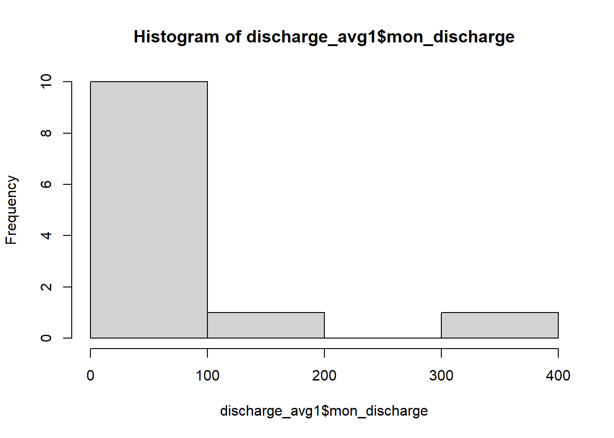
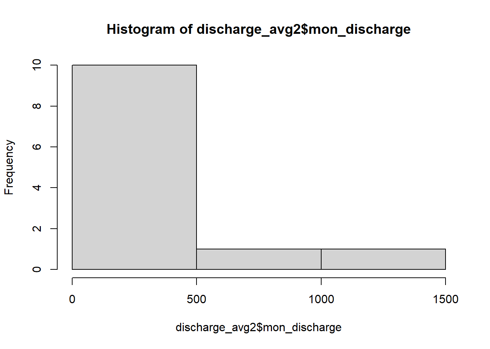
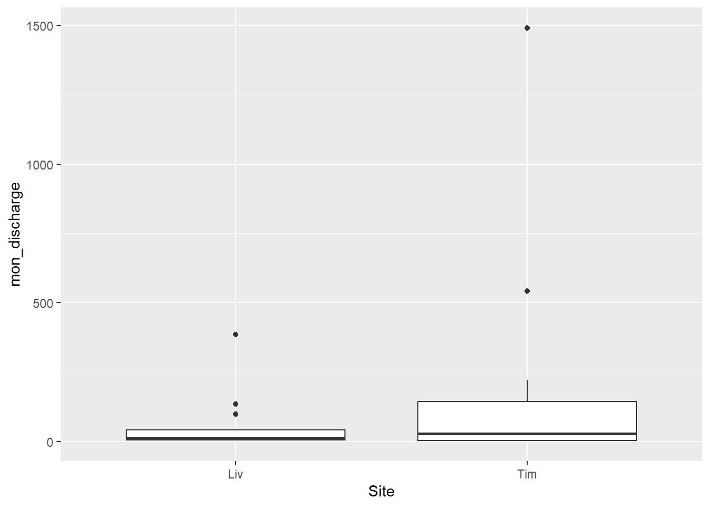
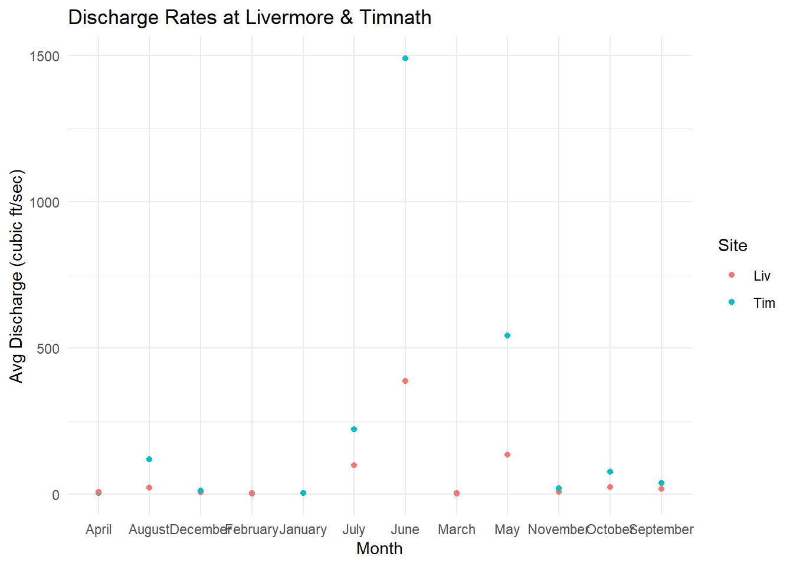

Completed with project partner Lexi Bell for CSU’s ESS 330: Quantitative Reasoning for Ecosystem Science.
Streamflow & Urbanization
As infrastructure increases and urbanization becomes more frequent, natural landscapes are disrupted causing a series of negative domino effects on surrounding ecosystems. This trend is especially relevant in freshwater sources due to their sensitivity to change and pre-stressed conditions that draw a significant amount of uncertainty in future planning. To understand the extent of these impacts in Colorado, my partner and I examined how streamflow might respond to nearby infrastructure development using USGS data from two sites along the Cache la Poudre River. Our null hypothesis assumed no difference in streamflow between the two sites while our alternative hypothesis suggests a significant difference in streamflow as the river intersects with the built environment.
Load in Data from USGS
Two sites were selected for this comparative analysis: Livermore and Timnath. The prior is located northwest of Fort Collins and is referenced as the site with no nearby development while Timnath is downstream of the city. Using the dataRetrieval package, we can download historical water quality data from USGS.
# install.packages("dataRetrieval") if neededlibrary(dataRetrieval)site_number_P1 <-"06751490"parameterCd_P1 <-"00060"Livermore <-readNWISuv(site_number_P1, parameterCd_P1, "2023-01-01", "2023-12-31")
Since USGS water quality measurements are taken every 15 to 60 minutes, it is crucial that they are summarized for the sake of comparison and calculation. Focusing on the 2023 calendar year, we selected discharge (cubic feet per second) as the is the main variable to illustrate natural periods of higher/lower flow rates. Thus, the discharge rate at each site will be averaged on monthly intervals.
library(tidyverse)
── Attaching core tidyverse packages ──────────────────────── tidyverse 2.0.0 ──
✔ dplyr 1.1.4 ✔ readr 2.1.5
✔ forcats 1.0.1 ✔ stringr 1.5.2
✔ ggplot2 4.0.0 ✔ tibble 3.3.0
✔ lubridate 1.9.4 ✔ tidyr 1.3.1
✔ purrr 1.1.0
── Conflicts ────────────────────────────────────────── tidyverse_conflicts() ──
✖ dplyr::filter() masks stats::filter()
✖ dplyr::lag() masks stats::lag()
ℹ Use the conflicted package (<http://conflicted.r-lib.org/>) to force all conflicts to become errors
# extract month from each row within dateTime columnMonth1 =months(Livermore$dateTime)# create new data frame with month and discharge onlydischarge_data1 =data.frame(Month = Month1, Discharge = Livermore$X_00060_00000)# remove NAs for higher quality data [not necessary but just in case]discharge_data1 <-na.omit(discharge_data1)# calculate monthly averagesdischarge_avg1 <-group_by(discharge_data1, Month) %>%summarize(mon_discharge =mean(Discharge)) %>%select(Site = Month, mon_discharge)# rename 'Month' to differentiate for dataframe bindingdischarge_avg1$Site[c(1:12)] <-"Liv"# repeat the same steps for the second siteMonth2 =months(Timnath$dateTime)# create new data frame with month and discharge onlydischarge_data2 =data.frame(Month = Month2, Discharge = Timnath$X_00060_00000)# remove NAs for higher quality datadischarge_data2 <-na.omit(discharge_data2)# calculate monthly averagesdischarge_avg2 <-group_by(discharge_data2, Month) %>%summarize(mon_discharge =mean(Discharge)) %>%select(Site = Month, mon_discharge)# rename 'Month' to differentiate for dataframe bindingdischarge_avg2$Site[c(1:12)] <-"Tim"
Combine Data Frames
For easier calculations, the Livermore and Timnath data frames were binded together.
library(dplyr)# merge data frames by rowrow_avg_both <-bind_rows(discharge_avg1, discharge_avg2)
Run T-Test to Compare Sites
Following the steps for a typical t-test, the normality and equal variance assumptions are first tested and then corrected. A paired t-test is the default model with confirmation from Welch’s t-test.
# visually test for normalityhist(discharge_avg1$mon_discharge)

hist(discharge_avg2$mon_discharge)

Both Livermore and Timnath’s discharge distributions are skewed to the right; thus, a log transformation is necessary to force data into normality.
# visually test for equal variancerow_avg_both %>%ggplot(aes(x = Site, y = mon_discharge)) +geom_boxplot()

The central tendencies are similar but not great indicators since Timnath has a much larger range of values. Instead, we will confirm the equal variance assumption with a mathematical test.
# 'pull' variablesLiv_avg <- row_avg_both %>%filter(Site =="Liv") %>%pull(mon_discharge)Tim_avg <- row_avg_both %>%filter(Site =="Tim") %>%pull(mon_discharge)# test EV asusmptionvar.test(Liv_avg, Tim_avg)
F test to compare two variances
data: Liv_avg and Tim_avg
F = 0.066126, num df = 11, denom df = 11, p-value = 8.644e-05
alternative hypothesis: true ratio of variances is not equal to 1
95 percent confidence interval:
0.01903626 0.22970260
sample estimates:
ratio of variances
0.06612622
Since the p-value (8.644e-05) is less than 0.05, we can assume that the variables do not have relatively equal intervals and a log transformation is definitely needed.
# log transform necessary due to unequal variance & non normalityvar.test(log(Liv_avg), log(Tim_avg))
F test to compare two variances
data: log(Liv_avg) and log(Tim_avg)
F = 0.49056, num df = 11, denom df = 11, p-value = 0.253
alternative hypothesis: true ratio of variances is not equal to 1
95 percent confidence interval:
0.141220 1.704043
sample estimates:
ratio of variances
0.4905558
Because the p-value (0.253) is not greater than 0.05, we know that the variance and normality of the data have been corrected so we can proceed with the t-test.
Two Sample t-test
data: log(row_avg_both$mon_discharge) by row_avg_both$Site
t = -0.72776, df = 22, p-value = 0.4744
alternative hypothesis: true difference in means between group Liv and group Tim is not equal to 0
95 percent confidence interval:
-2.217865 1.065626
sample estimates:
mean in group Liv mean in group Tim
2.835140 3.411259
Welch Two Sample t-test
data: row_avg_both$mon_discharge by row_avg_both$Site
t = -1.1752, df = 12.448, p-value = 0.2619
alternative hypothesis: true difference in means between group Liv and group Tim is not equal to 0
95 percent confidence interval:
-430.8463 128.1401
sample estimates:
mean in group Liv mean in group Tim
59.24855 210.60164
The p-value (0.474) in the paired t-test is greater than 0.05 so we fail to reject the null hypothesis and conclude that there is not a significant difference in discharge rates at the two sites representing urbanization’s impact. Using an unpaired t-test, the p-value (0.262) is also larger than 0.05 so we again fail to reject the null hypothesis and conclude that the two sites do not have significant variation in discharge.
Visualization
For the purpose of our final report, my partner and I spent some time creating a scatterplot to visualize our findings. This required the individual sites’ data frames to be rejoined by column and labeled by month.
#change labels to create scatterplot for monthly averagesMonth1 =months(Livermore$dateTime)discharge_data1 =data.frame(Month = Month1, Discharge = Livermore$X_00060_00000)discharge_data1 <-na.omit(discharge_data1)discharge_avg1 <-group_by(discharge_data1, Month) %>%summarize(mon_discharge =mean(Discharge))Month2 =months(Timnath$dateTime)discharge_data2 =data.frame(Month = Month2, Discharge = Timnath$X_00060_00000)discharge_data2 <-na.omit(discharge_data2)discharge_avg2 <-group_by(discharge_data2, Month) %>%summarize(mon_discharge =mean(Discharge))#combine dataframes by columncol_avg_both <-merge.data.frame(discharge_avg1, discharge_avg2, by ="Month")#recombine dataframes by row including monthrow2_avg_both <-bind_rows(discharge_avg1, discharge_avg2)ggplot_data <-merge.data.frame(row_avg_both, row2_avg_both, by ="mon_discharge")#use ggplot to generate figureggplot_data %>%ggplot(aes(x = Month, y = mon_discharge)) +geom_point(aes(color = Site)) +ggtitle("Discharge Rates at Livermore & Timnath") +xlab("Month") +ylab("Avg Discharge (cubic ft/sec)") +theme_minimal()

To conclude, our initial prediction assumed that there would be a relationship between urbanization and streamflow dynamics; however, we ended up failing to reject our null hypothesis. Thus, we did not find a significant difference between streamflow in non-developed vs developed settings and do not believe there is an obvious relationship between the two variables. Although this outcome didn’t correlate with our prediction, it did match the findings of similar case studies experimenting with urbanization and aquatic ecosystems.
While we averaged discharge rates by month to minimize confounding bias, we also want to recognize the challenge that our temporal scale presented in looking at one year of data. For a more inclusive analysis, we would likely want to repeat the t-tests with other years or include them in our initial test using an analysis of variance test (ANOVA) instead.